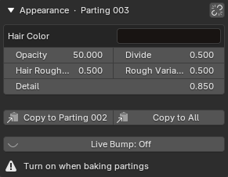
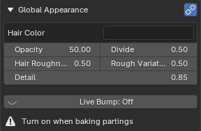
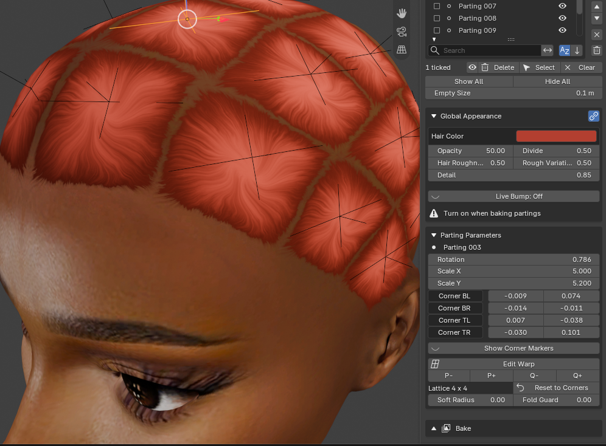

Make Every Parting Match¶
Applies to: Parting Placer V2.0.0 · Blender 4.4 · 5.2
Give every parting on a head the same colour and look. There are two ways, and they suit different jobs.
You Need First
Copy One Parting's Look Once¶
Use this when you have tuned one parting by eye and want the rest to match it now.
- In the parting list, select the parting you tuned.
- Check Link Appearance is off. The Appearance heading names your parting.

- Under the sliders in the Appearance box, select Copy to All.
It is a one-time copy. Later edits to that parting don't follow. Press Ctrl+Z to undo it.
To match only some partings, tick them in the parting list, then select Copy to Ticked instead. See Copy To Ticked.
Keep Them Linked¶
Use this when you want one set of values to drive every parting from now on.
- Select the link icon in the Appearance heading.
- Check the heading now reads Global Appearance.

- Change the sliders. Every parting follows.

When you turn linking on, the first parting in the list sets the starting values.
If You're Stuck
- A slider stops lower than it used to? See An Appearance Slider Will Not Go As High As It Used To.
- The bake is darker than your colour? See The Baked Colour Is Darker Than My Hair Color Swatch.
Recommended next: Keep The Viewport Fast